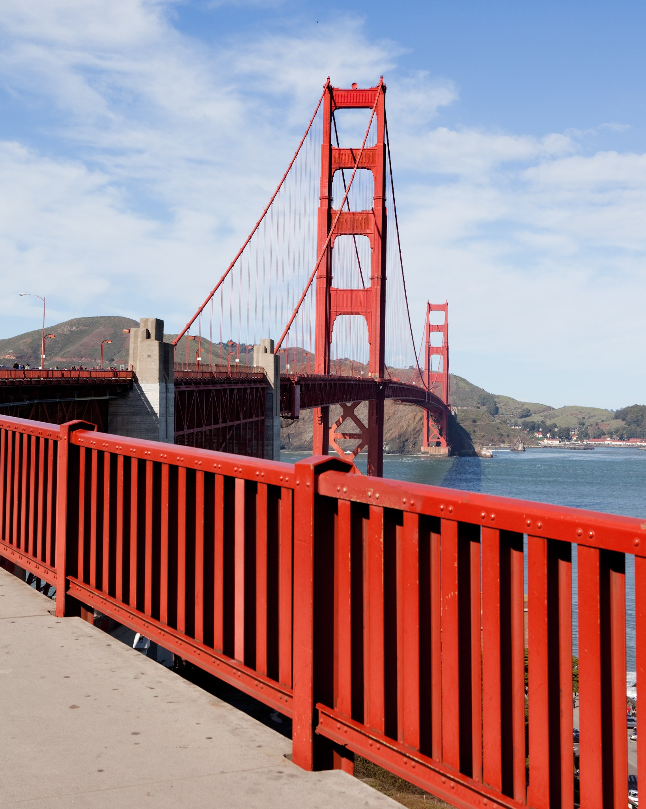
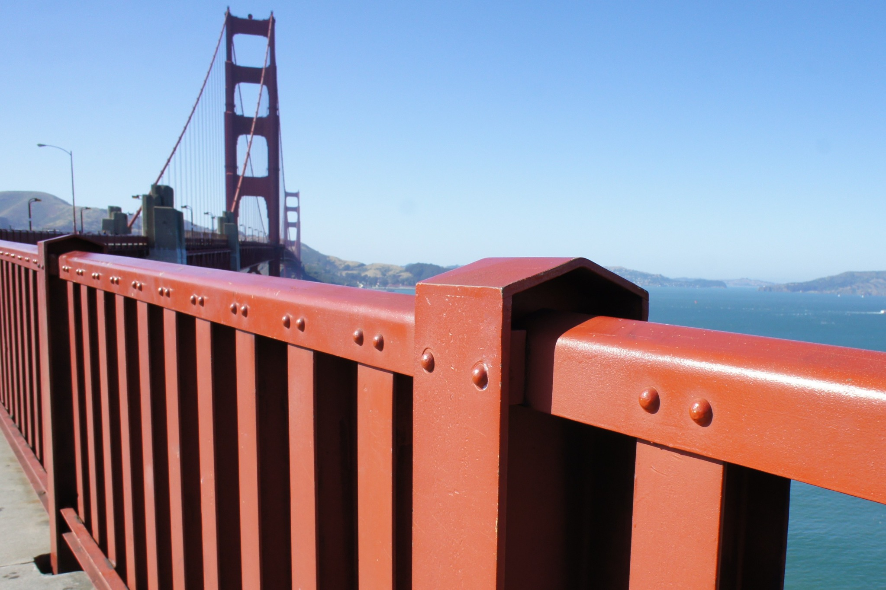
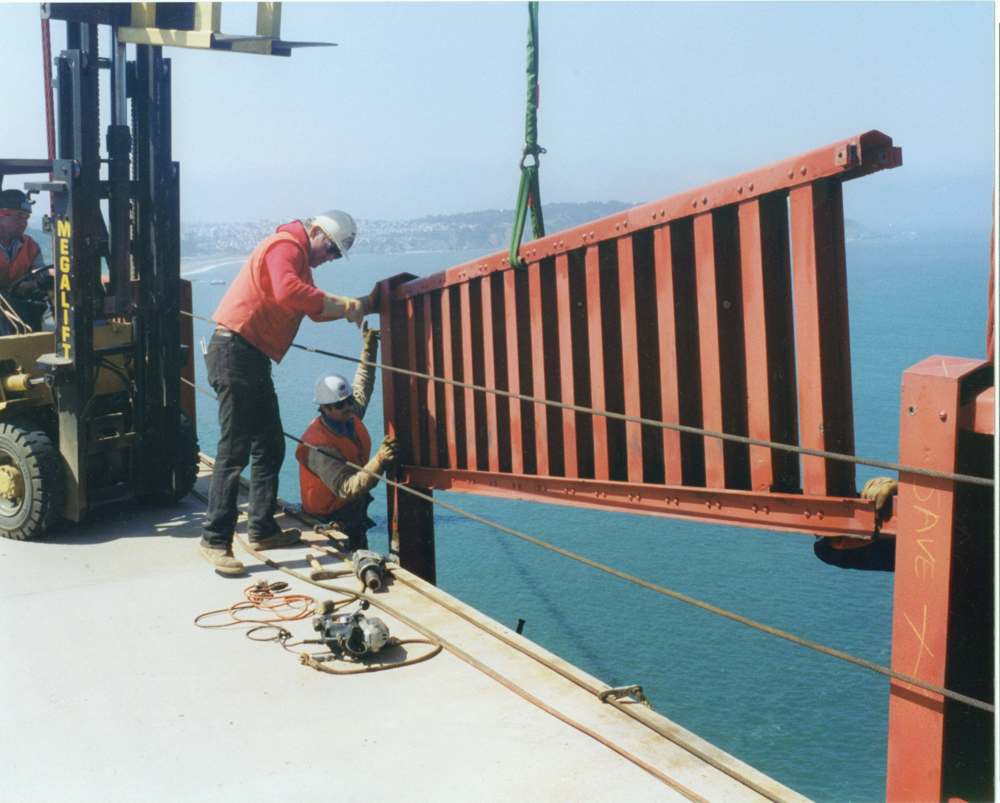
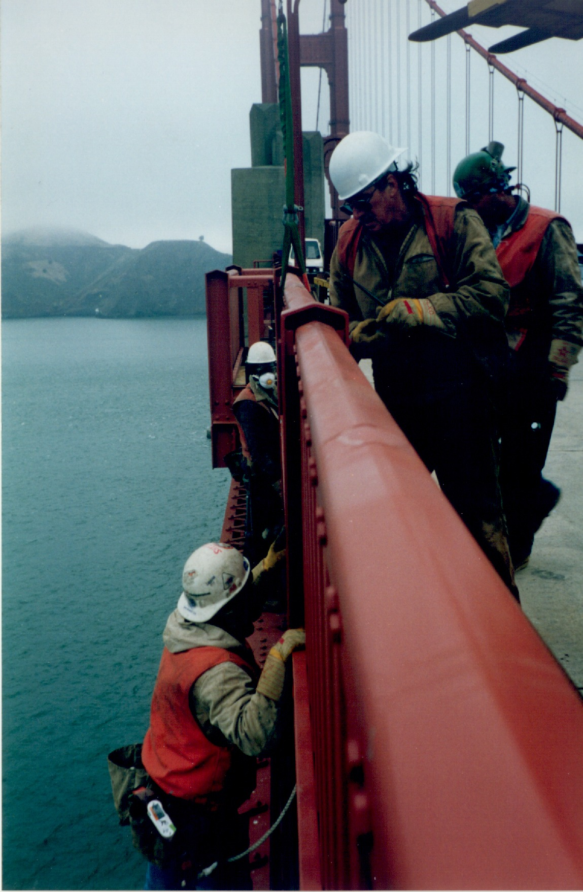
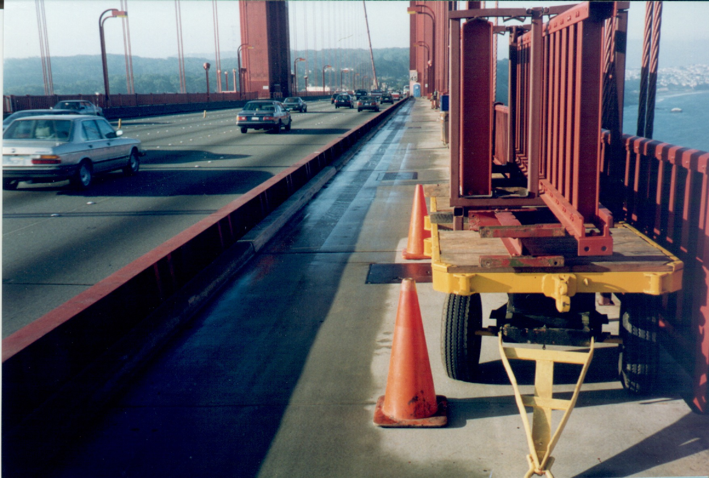
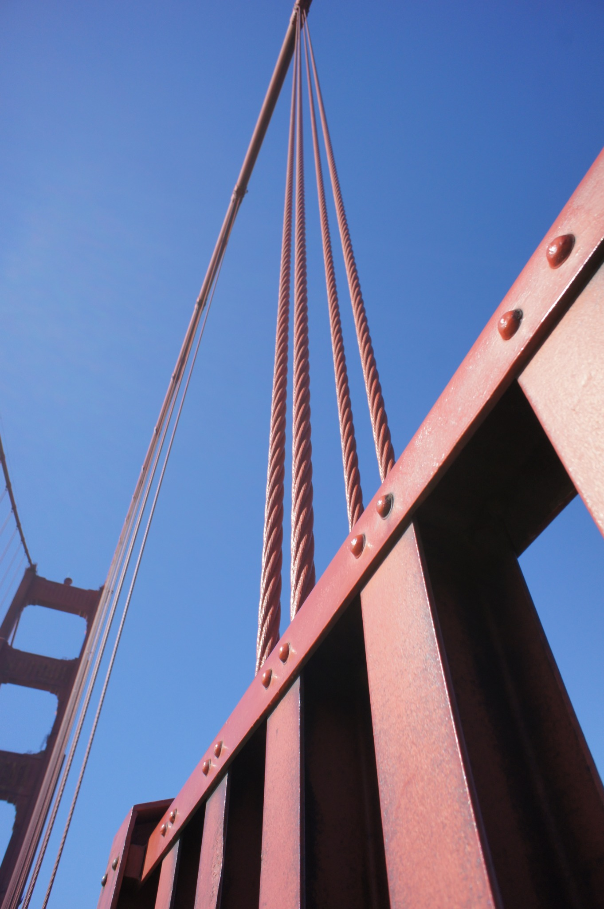

Installed 1937 · Removed 1993
A piece of
American history.
The steel in our work once lined the pedestrian walkway of the Golden Gate Bridge. This is the story of the original handrail, how it came down, and how it was preserved.
Discover the story1937
Building the Golden Gate Bridge.
Archival footage from the bridge's construction shows the pedestrian railing being installed.

The original pedestrian handrail
More than half a century above the Golden Gate.
The steel used in our work was part of the bridge's original pedestrian handrail. Milled by Bethlehem Steel Company in Pennsylvania, it was installed during construction and remained on the bridge from 1937 until replacement in 1993.
For more than fifty years, this handrail bordered the pedestrian walkway above San Francisco Bay. Its surface, seams, fasteners and markings are part of the material's history.
Details in the steel
Rivets vs. bolts
This short video looks closely at the railing on the bridge and shows the difference between the rounded rivets and later hex-head bolts.
1993
The original handrail comes down.
These photographs document the 1993 handrail replacement as it happened.



How the story became ours
In 1993, one section of bridge steel changed everything.
When I learned that the Golden Gate Bridge's original pedestrian handrail was being removed, I bought a 12½-foot section weighing roughly 1,000 pounds. I wasn't starting a business. I wanted a piece of the bridge for myself.
I cut a 115-pound section from that rail and made it into a headboard. Friends saw it and began asking if I could make pieces for them. In 1994, I bought the remaining handrail steel that was available, left my job, and founded Golden Gate Furniture Co.

Preserving the material
The bridge remains part of every piece.
Today, the original handrail steel is worked in our San Francisco metal studio. It is cut, cleaned, sandblasted and finished individually.
We don't try to erase the steel's history. That history is the reason the material matters.
Authenticity
Original Golden Gate Bridge steel.
The story continues
Own a piece of the Golden Gate Bridge.
Furniture, art, jewelry, gifts and keepsakes handcrafted in San Francisco from the original bridge steel.
Shop the collection